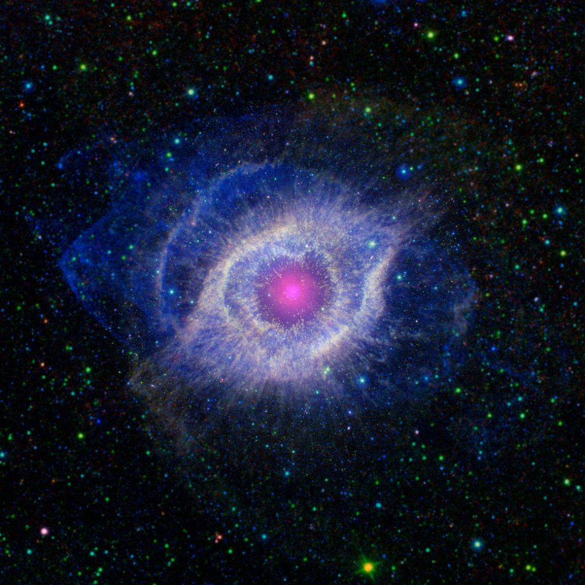

ဒီ လေ့လာရေး ကိရိယာ နှစ်ခုကို နာဆာကနေ အမေရိကန် ပြည်ထောင်စု ကာလီဖိုးနီးယား ပြည်နယ်မှာ ရှိတဲ့ ကာလီဖိုးနီးယား စက်မှု တက္ကသိုလ် (California Institute of Technology, CalTech) ကို သုတေသန အတွက် ငှားရမ်း ထားတာ ဖြစ်ပါတယ်။ အခုပုံကိုတော့ ဒီ တက္ကသိုလ်က နက္ခတ် ပညာရှင်တွေက ရိုက်ယူခဲ့တာလို့ သိရပါတယ်။
ဒီပုံမှာ ပါတဲ့ နက်ဗြူလာ တိမ်တိုက်ကြီးဟာ ကမ္ဘာကနေဆို အလင်းနှစ် ၆၅၀ ကွာဝေးပါတယ်။ ဒီ နက်ဗြူလာကြီးရဲ့ အမည်ကတော့ ဟဲလစ်စ် နက်ဗြူလာ (Helix nebula) ဖြစ်ပါတယ်။ ဒီ နက်ဗြူလာရဲ့ အလယ်မှာ အသက်ငင် နေတဲ့ ကြယ်အိုကြီး တစ်လုံး ရှိနေပါတယ်။ ဒီ ကြယ်အိုကြီးဟာ သူ့ရဲ့ အပြင်လွှာက ဓါတ်ငွေ့တွေကို အာကာသ ထဲကို မှုတ်ထုတ်နေရာကနေ ဒီ နက်ဗြူလာကြီး ဖြစ်လာရတာ ဖြစ်ပါတယ်။
ဒီ ကြယ်တွေက ကျွန်တော်တို့ နေလိုပဲ အသက်ရှင်စဉ် ကာလတုန်းက ဟိုက်ဒရိုဂျင် ဓါတ်ငွေ့တွေကို အဏုမြူ လောင်ကျွမ်းမှု ဖြစ်စေပြီး ဟီလီယမ် အဖြစ် ပြောင်းလဲ ပေးနေ ခဲ့တာပါ။ အဲ့သည် လောင်ကျွမ်းမှုကြောင့်ပဲ ကျွန်တော်တို့ နေ ကနေ အလင်းနဲ့ အပူကို ရရှိတာ ဖြစ်ပါတယ်။ ကျွန်တော်တို့ နေလဲ နောက် နှစ် သန်း ၅,၀၀၀ ကျော်လောက်ကျရင် ရှိတဲ့ ဟိုက်ဒရိုဂျင်တွေ အကုန် လောင်ကျွမ်းသွားပြီး နက်ဗြူလာ တစ်ခုအဖြစ် ပြောင်းလဲ သွားမှာပါ။
ကြယ်တစ်စင်းဟာ သူ့မှာ ရှိတဲ့ ဟိုက်ဒရိုဂျင်တွေကို လောင်ကျွမ်းလို့ ကုန်သွားရင် ဆက်ပြီး တောက်လောင် ဖို့ အတွက် ဟီလီယံကို အသုံးပြုရပါတယ်။ ဒီ ဟီလီယံတွေ လောင်ကျွမ်းမှုကနေ ပိုလေးတဲ့ ကာဗွန်တို့၊ အောက်ဆီဂျင်တို့၊ နိုက်ထရိုဂျင်တို့ တွေ ထွက်လာတာ ဖြစ်ပါတယ်။
ဒီ ဟီလီယမ်တွေ ကုန်သွားတဲ့ အခါမှာတော့ ဆက်လောင်စရာ မကျန်တော့တာမို့ ကြယ်ဟာလဲ သေဆုံးသွားမှာ ဖြစ်ပါတယ်။ ဒီအခါ ကြယ်ရဲ့ အပေါ်ယံလွှာက ဓါတ်ငွေ့တွေကို ကြယ်ပတ်လည်ကို မှုတ်ထုတ်လိုက်ပြီး ဒီ ဓါတ်ငွေ့တွေကနေ နက်ဗြူလာ တိမ်တိုက် အဖြစ် ပြောင်းလဲ သွားတာပါ။ အလယ်မှာ ကျန်ခဲ့တဲ့ အူတိုင်ကတော့ အရမ်းကို သိပ်သည်းပြီး ပူပြင်းတဲ့ ကြယ်ဖြူပု (white dwarf) အဖြစ် ပြောင်းလဲ သွားပါတယ်။
ဒီဖြစ်လာတဲ့ ကြယ်ဖြူပုဟာ အရွယ်အားဖြင့်တော့ ကမ္ဘာလောက်ပဲ အရွယ် ရှိတာပါ။ ဒါပေမယ့် သူ့ရဲ့ ဒြပ်ထုက မူရင် ကြယ်ရဲ့ ဒြပ်ထု နည်းပါး ရှိပါတယ်။ ဒါ့ကြောင့် သူ့ရဲ့ သိပ်သည်းဆ (density) ကလဲ အရမ်းကို များပါတယ်။ ဘယ်လောက်တောင် သိပ်သည်းဆ များလဲဆို ဒီ ကြယ်ဖြူပုရဲ့ အူတိုင်က ဒြပ်ထု လက်ဖက်ရည်ဇွန်း တစ်ဇွန်းဟာ ဆင် အကောင် ၄-၅-၁၀ ကောင်လောက်ကို လေးမယ်လို့ ဆိုပါတယ်။

အခု ဒီ Helix နက်ဗြူလာ ကြီးကိုလဲ ဘယ် ရောင်စဉ် ဖမ်းတဲ့ ကင်မရာနဲ့ပဲ ဓါတ်ပုံ ရိုက်ရိုက် တူညီတဲ့ ပုံရိပ်ပဲ ထွက်လာတာ တွေ့ကြရပါတယ်။ ဒါပေမယ့် အဲ့ပုံတွေ အားလုံးကို ထပ်ကြည့်လိုက်မယ် ဆိုရင်တော့ နည်းနည်းလေး ကွဲနေတာလေးတွေ တွေ့ကြရမှာ ဖြစ်ပါတယ်။
ဒီပုံမှာ မြင်ကြရတဲ့ အရောင်စုံ ပုံကို ရဖို့ကိုတော့ အလင်းလှိုင်း အမျိုးမျိုးကို ဖမ်းယူနိုင်တဲ့ ကင်မရာ မျိုးစုံနဲ့ ရိုက်ပြီး ပြန်ထပ်ထားတာ ဖြစ်ပါတယ်။ အလယ်ကောင်မှာ ရှိတဲ့ ကြယ်ဖြူပု ကနေ ထုတ်လွှတ်လိုက်တဲ့ ပြင်ထန်တဲ့ ခရမ်းလွန် ရောင်ခြည်လှိုင်းတွေ (ultraviolet light) ကို ဖြာထွက်နေတဲ့ အပြာရောင် အလင်းတန်း တွေ အနေနဲ့ မြင်ကြရပါတယ်။
ဒီ ခရမ်းလွန် ရောင်ခြည်လှိုင်းတွေကြောင့် နက်ဗြူလာရဲ့ ပတ်ခြာလည်က တိမ်တွေ ပူလာပြီး အနီအောက် ရောင်ခြည်တွေ ထွက်လာပါတယ်။ ဒီ အနီအောက် ရောင်ခြည်လှိုင်းတွေကိုတော့ အဝါရောင်နဲ့ တွေ့ရမှာ ဖြစ်ပါတယ်။ ကြယ်ဖြူပု လေးကိုတော့ ခလယ်က ပန်းရောင် အလင်းပြောက် လေးအဖြစ် မြင်ရပါတယ်။
အလယ်က ကြယ်ဖြူပုလေးကို ဝိုင်းရံနေတဲ့ ခရမ်းရောင် ကွင်းလေးကတော့ အဲ့သည် နေရာမှာ ရှိနေတဲ့ ဓါတ်ငွေ့တွေ အခြား ဖုန်မှုန့်တွေကနေ ထုတ်ပေးတဲ့ ခရမ်းလွန် ရောင်ခြည်နဲ့ အနီအောက် ရောင်ခြည် လှိုင်းနှစ်ခုက ထွက်တဲ့ အရောင်တွေ ရောသွားလို့ ဖြစ်လာတာ ဖြစ်ပါတယ်။
ဒီကြယ်မသေခင် တုန်းကတော့ ကျွန်တော်တို့ နေကို ကမ္ဘာနဲ့ ဂြိလ်တွေ၊ ဂြိုလ်သိမ်တွေ၊ ကြယ်တခွန်တွေ ပါါတ်နေ သလိုမျိုးပဲ အခြွေအရံ ဂြိုလ်တွေ၊ ကြယ်တခွန်တွေနဲ့ ဖြစ်နေခဲ့မှာပါ။ ကြယ် သေခါနီး အသက်ငင်ပြီး ဓါတ်ငွေ့တွေ မှုတ်ထုတ်တဲ့ အချိန်မှာ သူ့ရဲ့ အရံဂြိုလ်တွေ၊ ဂြိုလ်သိမ်တွေနဲ့ ကြယ်တခွန်တွေရဲ့ လမ်းကြောင်းတွေ ကမောက်ကမ ဖြစ်ကုန်ပြီး အချင်းချင်း ဝင်တိုက်မိ ပျက်စီးကုန် ကြပါတယ်။ ဒီက ကျန်ခဲ့တာတွေက ဥက္ကာခဲတွေနဲ့ ဖုန်မှန့်တွေ ဖြစ်လာပြီး ကြယ်က မှုတ်ထုတ်လိုက်တဲ့ ဓါတ်ငွေ့တွေနဲ့ ရောပြီး ဓါတ်ငွေ့တိမ်တိုက်ကွင်းကြီး ဖြစ်လာရတာပါ။
အရမ်းနီးတဲ့ ဂြိုလ်တွေကတော့ ဖုန်မှုံ့တောင် ဖြစ်ချိန်မရလိုက်ပဲ ကြယ်အိုကြီးရဲ့ ဝါးမြိုတာကို ခံလိုက်ကြရပါတယ်။
Reference: Helix Nebula – Unraveling at the Seams | NASA
Photo: NASA/JPL-Caltech